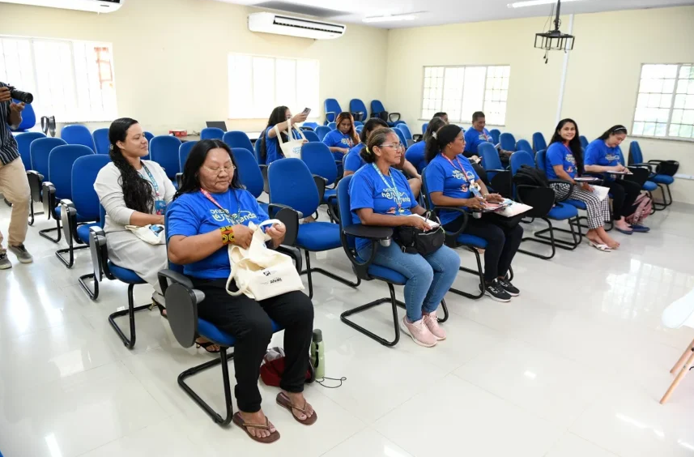

Projeto Onde há rede, há renda promove oficinas em São Paulo
O projeto Onde há rede, há renda promove, entre os dias 17 e 24 de outubro, uma jornada de qualificações gratuitas voltada ao fortalecimento da reciclagem na cidade de São Paulo. A iniciativa é desenvolvida pelo Instituto Movimento Cidade em parceria com a instituição Recifavela e reúne cinco oficinas focadas em catadores autônomos, cooperados e lideranças de cooperativas da capital paulista.